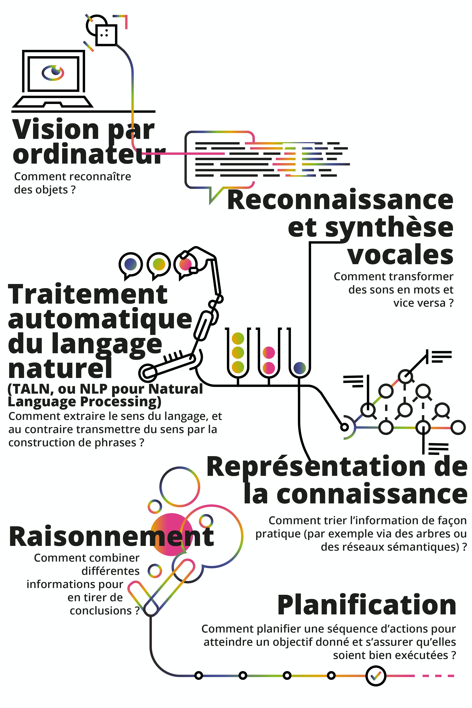

La création et l’étude de machines qui agissent en faisant preuve d’intelligence.
Mon Sommaire Veilles Technologiques
Publié le 27 Avril 2020
1. Qu'est-ce que l'intelligence artificielle ?
2. Pourquoi l'IA est importante ?
3. Comment l'IA peut être appliquée dans diverses industries ?
4. Cinq innovations qui changeront nos vies d'ici cinq ans.
1. Qu'est-ce que l'intelligence artificielle ?
L'intelligence artificielle (IA) est « l'ensemble des théories et des techniques mises en œuvre en vue de réaliser des machines capables de simuler l'intelligence ». Elle correspond donc à un ensemble de concepts et de technologies plus qu'à une discipline autonome constituée.
La deuxième façon de définir l’IA est de s’intéresser aux composantes ou aux sous-problèmes qu’elle s’efforce de résoudre. Voici ceux dont vous entendrez le plus parler :
2. Pourquoi l'IA est importante ?
De nos jours, êtres humains et machines génèrent des données plus vite qu'il n'est humainement possible de les absorber et de les interpréter pour prendre des décisions complexes. L'intelligence artificielle est la base de tout apprentissage par un ordinateur et représente l'avenir des processus décisionnels complexes. Par exemple, la plupart des êtres humains peuvent apprendre à ne pas perdre à une simple partie de morpion, alors qu'il existe 255 168 actions possibles, dont 46 080 mènent à un match nul. En revanche, les champions du jeu de dames sont plus rares, étant donné qu'il existe plus de 500 x 1018 (500 trillions) de coups possibles. Les ordinateurs sont capables de calculer ces combinaisons et les meilleures permutations possibles très efficacement, afin de prendre la bonne décision. L'IA (avec son évolution logique, l'apprentissage machine) et l'apprentissage profond représentent l'avenir de la prise de décisions.
3. Comment l'IA peut être appliquée dans diverses industries ?
Millitaire
Le domaine militaire utilise des systèmes tels que les drones, les systèmes de commandement et d'aide à la décision. L’utilisation des intelligences artificielles dans le domaine militaire est devenue de plus en plus important. Les États-Unis ont dépensé 18 milliards de dollars pour trois années de recherches dans tous les domaines requis à l’automatisation de l’armement militaire. Une course aux armements à base d'IA est en cours, telle qu'illustrée par le projet Maven aux États-Unis. Jean-Christophe Noël, expert de l'Institut français des relations internationales (IFRI), rapporte qu'une IA, surnommée ALPHA, fit ses premières classes en octobre 2015. En affrontant des programmes informatiques de combats aériens de l'Air Force Research Laboratory, elle triompha systématiquement face à un pilote de chasse chevronné.
La Robotique
La robotique a recours à l'inteligence artificielle à plusieurs égards. Notamment pour la perception de l'environnement (objets et visages), l'apprentissage et l'intelligence artificielle développementale. L'interaction homme-robot manque encore souvent de naturel et est un enjeux de la robotique. Il s'agit de permettre aux robots d'évoluer dans le monde dynamique et social des humains et d'échanger avec eux de façon satisfaisante. L'échange nécessite également, à l'inverse, une évolution du regard que les humains portent sur les robots ; selon Véronique Aubergé, chercheuse à l’Université Grenoble-Alpes la vraie révolution n’est pas technologique, elle est culturelle. D'ores et déjà, travers les robots dotés d'intelligence artificielle, tel Google Home, les utilisateurs combleraient un isolement social
L'informatique
On a pu voir une première innovation s’opérer au travers de la technologie prédictive, qui a grandement rendu service aux organisations et entreprises dans leur manière de gérer leur activité. L’intelligence artificielle s’est avérée sur ce plan efficace pour déterminer avec précision et pertinence ce dont celles-ci ont besoin pour agir et fonctionner. Ce qui n’était jusqu’alors irréalisable, et encore moins par un être humain. D’autre part, certains experts estiment qu’avec les nouvelles recherches et améliorations, la portée de l’intelligence artificielle va encore s’étendre au-delà du prédictif. Ce système est prévu couvrir plusieurs champs d’applications rattachés à l’informatique, utilisant des technologies encore plus intelligentes et composites. Le but est de permettre à l’entreprise de profiter au maximum des possibilités offertes par l’évolution technologique.
4. Cinq innovations qui changeront nos vies d'ici cinq ans.
Au cours des cinq prochaines années, la population de la Terre franchira la barre des huit milliards pour la première fois. Notre chaîne d'approvisionnement alimentaire complexe - déjà stressée par le changement climatique et un approvisionnement limité en eau - ne fera que subir des tests supplémentaires. Pour répondre aux exigences de cet avenir surpeuplé, les chercheurs d'IBM explorent de nouvelles technologies et de nouveaux dispositifs, des percées scientifiques et de nouvelles façons de penser la sécurité et la sûreté alimentaires.
Imaginez une planète où un accès instantané à des données critiques sur les terres agricoles du monde pourrait être fourni à tous ceux qui en ont besoin. Au cours des cinq prochaines années, cela deviendra réalité lorsqu'un jumeau numérique des ressources agricoles mondiales sera facilement disponible.
D'ici cinq ans, nous éliminerons bon nombre des inconnues coûteuses de la chaîne d'approvisionnement alimentaire. Des agriculteurs aux fournisseurs d'épicerie, chaque participant à l'écosystème alimentaire saura exactement combien planter, commander et expédier. La perte de nourriture diminuera considérablement et les produits qui se retrouveront dans nos chariots seront plus frais - lorsque la technologie de la chaîne de blocs, les appareils IoT et les algorithmes d'IA unissent leurs forces.
D'ici cinq ans, les agriculteurs, les transformateurs et les épiciers du monde entier, ainsi que ses milliards de cuisiniers à domicile, pourront détecter sans effort les contaminants dangereux dans leurs aliments. Tout ce dont ils auront besoin, c'est d'un téléphone portable ou d'un comptoir avec des capteurs AI.
D'ici cinq ans, les inspecteurs de la sécurité sanitaire des aliments du monde entier acquerront une nouvelle superpuissance: la capacité de comprendre comment des millions de microbes coexistent au sein de la chaîne d'approvisionnement alimentaire. Ces microbes - certains sains pour la consommation humaine, d'autres non - sont partout - dans les aliments des fermes, des usines et des épiceries. La capacité de surveiller constamment et à moindre coût les comportements des microbes à chaque étape de la chaîne d'approvisionnement représente un énorme bond en avant en matière de sécurité alimentaire.

Dans cinq ans, l'élimination des déchets et la création de nouveaux plastiques seront complètement transformées. Tout, des cartons de lait et des contenants à biscuits aux sacs d'épicerie et aux vêtements, sera recyclable, et les entreprises de fabrication de polyester pourront récupérer les déchets et les transformer à nouveau en quelque chose d'utile.
Des ingénieurs tunisiens indiquent avoir développé un outil d'intelligence artificielle en libre accès pour aider à diagnostiquer instantanément le nouveau coronavirus à partir de simples radiographies des poumons, ce qui pourrait accélérer le dépistage de la maladie Covid-19 en
Conçu par Michel